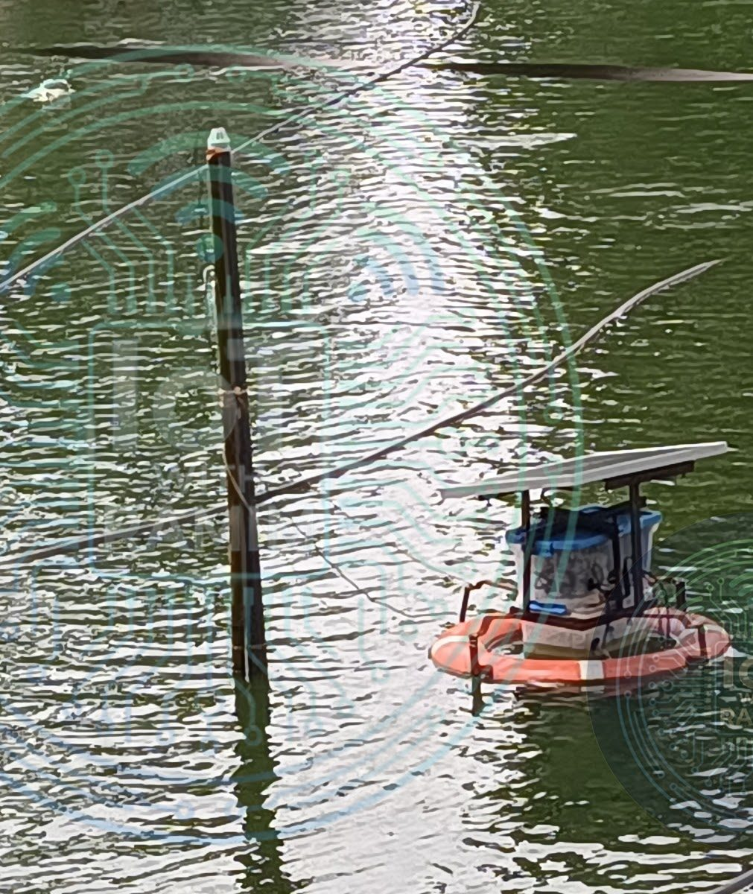
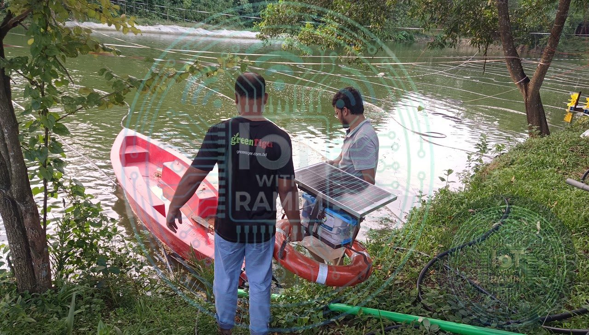
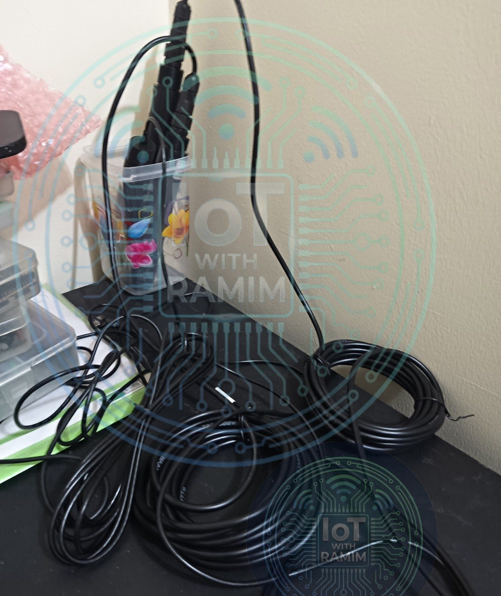
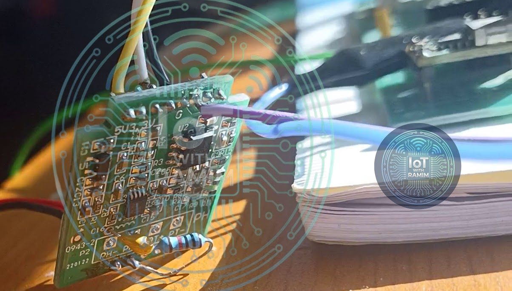
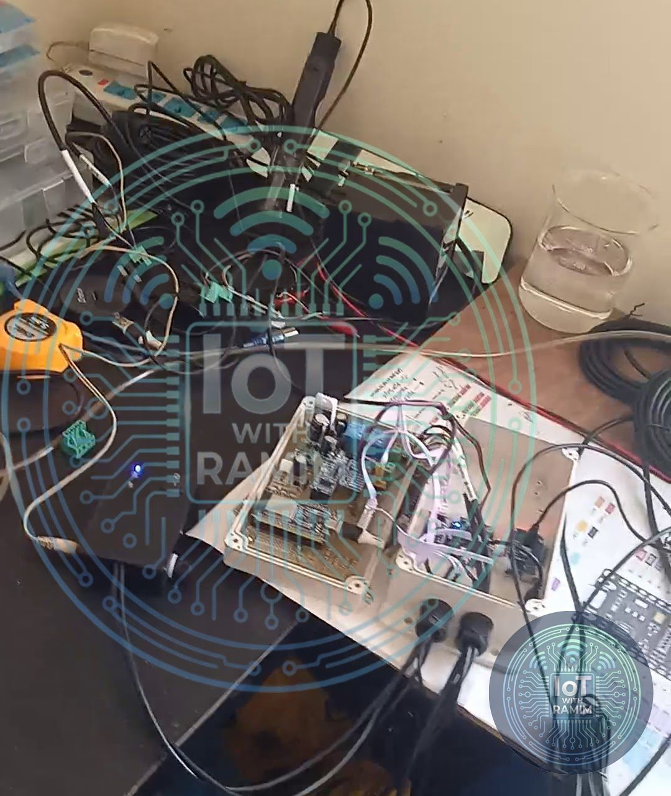
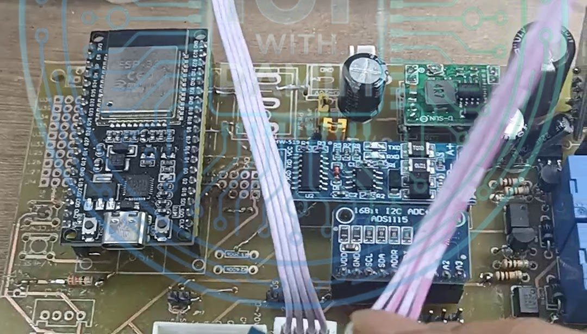

Aquaculture
NFN Sensor Unit (SEN v1 & v2)
The data-acquisition node of the Nexus Fish Network ecosystem: a standalone, energy-autonomous floating profiler that continuously monitors critical aquaculture water parameters. Version 1 protected hobby-grade sensors with an active sampling box; version 2 moved to industrial probes with no moving parts.
- Client
- Nexus Fish Network (NFN)
- Role
- Lead R&D Engineer (IoT & Hardware)
- Type
- Floating water-quality profiler
- Versions
- SEN v1.0 and v2.0
- ESP32
- Modbus RS-485
- ADS1115
- DS18B20
- DHT22
- MQTT
- LiFePO4 solar
- BMS
Overview
The NFN SEN unit floats on the pond surface and continuously measures the water parameters that matter in aquaculture. It is built on a "ring buoy" mechanical architecture:
- Structure: a custom metal chassis mounted on a standard life-saving ring buoy for stability in turbulent water.
- Enclosure: an IP65-rated waterproof box housing the MCU, the battery management system (BMS) and the signal-processing circuits.
- Power: fully off-grid, using a 12 V solar panel, a 4S LiFePO4 battery pack and a solar charge controller.
The unit is part of the Smart Aquaculture Ecosystem, where its readings drive the NFN-SW switching unit.
SEN v1.0: the active sampling approach
The first version worked around the limits of hobby-grade sensors with mechanical ingenuity.
The challenge
The prototype used DFRobot Gravity analog sensors: DO (SKU SEN0237), pH V2 (SKU SEN0161-V2) and the Analog ORP Pro. Field testing showed that these sensors degraded quickly when continuously submerged, because of bio-fouling and electrolysis.
The engineering solution: the sampling box
To extend sensor life, I engineered an active sampling system:
- Mechanism: a secondary plastic reservoir, the sampling box, mounted on the buoy.
- Logic: a 12 V DC pump periodically filled the box with pond water.
- Sensing: the DO, pH, ORP and turbidity sensors sat inside the box and took readings only when fresh water had been pumped in.
- Direct sensors: robust sensors stayed deployed in the pond full time: TDS, temperature (DS18B20) and an ultrasonic water-level sensor mounted on a guide pipe.
- ADC interfacing: dual ADS1115 16-bit ADC modules provided the resolution the analog sensor array needed.


SEN v2.0: the industrial evolution
The current version focuses on durability and precision, and minimises mechanical failure points. It removes the pump system entirely by moving to industrial-grade probes rated for 24/7 submersion.
- RS-485 Modbus sensing: dissolved oxygen and pH moved to industrial RS-485 Modbus sensors, eliminating analog signal noise and the need for frequent recalibration.
- Hardware reverse engineering (ORP): to use a high-quality analog ORP probe cost-effectively, I reverse-engineered a commercial ORP analyzer, extracted its internal signal-conditioning module and interfaced it with the ADS1115 on my custom PCB.
- Custom sensor modification: I waterproofed the electronics of the Gravity analog turbidity sensor so it can be submerged directly in the pond without a sampling chamber.
Result: a solid-state system with zero moving parts and no pumps, which significantly reduces maintenance.


System intelligence and telemetry
Both versions include telemetry for remote troubleshooting.
Internal climate monitoring
A DHT22 sensor sits directly on the PCB inside the main enclosure and reports the internal temperature and humidity of the waterproof box. Rising humidity warns the engineering team of a possible seal failure (water ingress) before the electronics are damaged.
Data transmission
- The ESP32 aggregates data over three buses: Modbus (RS-485), I2C (ADS1115) and OneWire (temperature).
- Optimised payloads are sent to the cloud over MQTT for real-time visualisation.


v1.0 vs v2.0 at a glance
| Area | SEN v1.0 | SEN v2.0 |
|---|---|---|
| DO and pH | DFRobot Gravity analog (SEN0237, SEN0161-V2) in sampling box | Industrial RS-485 Modbus probes, directly submerged |
| ORP | DFRobot Analog ORP Pro in sampling box | Analog probe with signal conditioning from a reverse-engineered analyzer, via ADS1115 |
| Turbidity | Gravity analog sensor in sampling box | Custom-waterproofed Gravity sensor, directly submerged |
| Moving parts | 12 V DC sampling pump | None |
| Shared platform | ESP32, ADS1115 16-bit ADC, DHT22 enclosure telemetry, MQTT, 12 V solar with 4S LiFePO4 and BMS | |